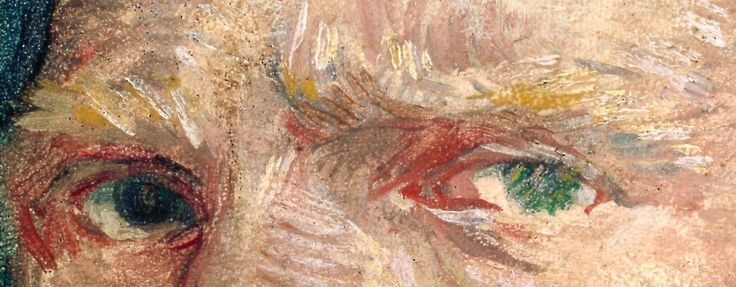

The Art of Solitude: Exploring Vincent van Gogh’s World
About
Vincent van Gogh (1853–1890) was a Dutch Post-Impressionist painter whose expressive use of color and dramatic brushwork have made him one of the most influential figures in the history of Western art. Despite facing personal struggles and only achieving limited recognition during his lifetime, van Gogh's art has since become iconic, capturing raw emotion, human struggle, and the beauty of the natural world. Van Gogh's work is characterized by vibrant, thick brushstrokes and a bold use of color, often reflecting his inner turmoil, his quest for meaning, and his deep connection with nature. His iconic pieces, such as Starry Night, Sunflowers, and The Bedroom, remain timeless symbols of artistic innovation and emotional depth. His exploration of themes like isolation, mental health, and the search for purpose resonates with audiences across generations. This portfolio celebrates the enduring legacy of Vincent van Gogh, offering a glimpse into the powerful emotional landscape that defined his art. Each piece captures not only the world he saw, but the world he felt—a world where color, light, and form transcended the ordinary, leaving an indelible mark on the art world.
Gallery

Starry night
most famous painting, Starry Night depicts a swirling night sky over a quiet town. The intense blues and yellows reflect the emotional turbulence of van Gogh’s mind, while the peaceful village below contrasts with the chaos of the heavens above.

Sunflowers
The vibrant Sunflowers series is a celebration of color and life. Each painting, filled with rich yellows and oranges, captures the energy and fleeting beauty of nature, showcasing van Gogh’s ability to transform everyday objects into powerful symbols of vitality.
Bedroom
In The Bedroom, van Gogh's simple room is rendered with bold colors and angular lines, conveying a sense of comfort yet solitude. The piece reflects van Gogh’s desire for peace and stability amid his tumultuous personal life.
The café terrace at night
In this striking work, van Gogh presents a night scene of a bustling café under a deep blue sky. The warmth of the café contrasts with the cool night, symbolizing a tension between comfort and the vast, indifferent universe.